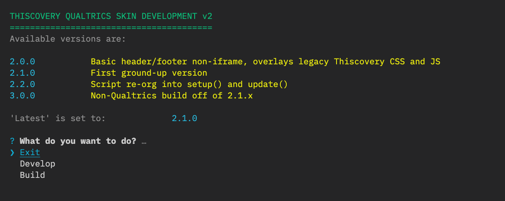

Either you are going to be working on a local html file (likely to be one of the html files in /test_pages) which are useful for working on new js snippets, or more often you are going to be working directly on a Qualtrics survey. Make sure the survey is set up to use the 'development' version of the skin by pointing it to the github repo directly (see Survey Setup).
Run the dev script to get started (either with npm run dev or in your VDE of choice). You should see the following:

Develop
You will be asked to provide a URL to open (the Qualtrics anonymous distribution link) or the local file path. You will also be asked which version to watch (make sure it is the same as in the survey you are working on), then given a choice of browser to open. You are also asked whether to start a SkinJob server to work on live CSS (see Tools).
The script starts up a Browser-Sync server to the given options, and starts watching CSS and JS across all versions (because of shared components) and will rebuild JS only on changes (this is because it is presumed live changes in CSS are done via SkinJob, and to stop constant page reloads).
NB By default the browsersync server uses port 3000 - if you have a conflict, run the initial command as npm run dev [port] to use an alternative.
If SkinJob is set up properly, you should see changes to CSS after saving without a page reload (see note on conflicts though in troubleshooting).
When saving changes to the relevant JS, a full page reload should be triggered by browser-sync.
Notes
- To see debug messages in console, in localStorage, the key 'debug' must include string 'thisco:*' in its value (see Debug) - the dev.js script injects some code to do that for you in 'Develop' mode
- Custom validation (ie. non-Qualtrics) is disabled for Qualtrics preview by default - if you need to test it in preview, change the value of thisco_dev in localStorage so it contains
TEST_VAL(this might be superceded by changing all the custom validation to in-UI warnings?)